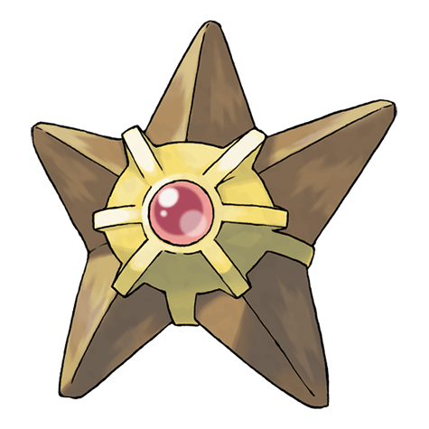

Назад
Старью

Старью — Покемон 1 поколения под номером 120 в Pokedex. Обитает он в регионе Канто и относится к Водному типу. Центр тела Старью имеет ярко-красный орган, называемый ядром. К концу лета вечерние пляжи озаряются красными огоньками. Сверкающие ядра этих Покемонов выглядят словно звёзды на небе.
Тип:
Водяной
Эволюция
# 120 Старью
=>
# 121 Старми